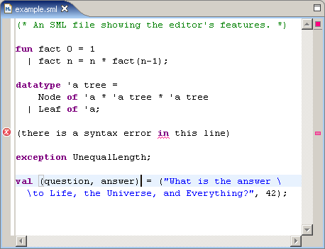
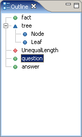

The SML editor opens on files which have an SML-specific extension (sml, sig or fun). It performs syntax highlighting on the file, showing SML keywords, strings, and comments in different colours. (These colours can be changed from the preferences.) Bracket matching is supported: if the cursor is on a bracket, its matching bracket is highlighted.
The program code is periodically parsed to find syntax errors. Each error is indicated by a wavy red underline under the offending token, as well as red error markers in the left and right margins.
Note: There is a bug in the parser, it sometimes marks errors where there aren't any. Separating declarations with semicolons fixes the problem. If you don't want to do that, you can disable errors marking in the preferences.
The outline view, to the side of the editor, displays an outline of the program's contents. Different icons represent different kinds of declarations, like variables, types, structures, etc. The outline groups related elements together; for example, constructors are grouped under their datatypes. The outline updates automatically while you edit the program.
The outline view makes it easy to navigate large files. At any time, the element at the cursor's position in the SML editor is highlighted in the outline. Clicking on any element there will take you directly to its declaration in the editor.